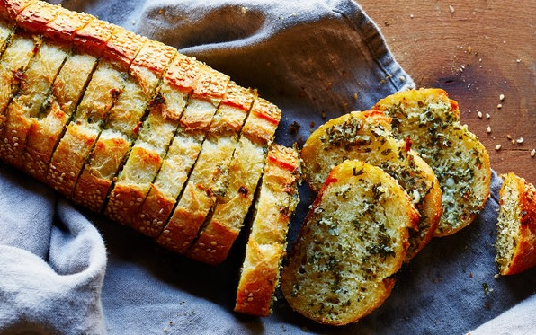

Sarımsaklı Ekmek Tarifi

Uzun süredir aklımda olan bu tarifi yapmak için haftasonunu bekliyordum.Sıcak sıcak mis gibi sarımsaklı ekmeklerimi sizlerinde denemesini tavsiye ediyorum. biz 4 kişilik aile olarak kahvaltıda 2 tanesini tükettik. hala tadı damağımda ilk fırsatta tekrar yapacağım..
Kaç Kişilik: 4-6 Kişilik
Hazırlama Süresi: 15 Dk
Pişirme Süresi: 25 Dk
Malzeme Listesi
Hamuru İçin:
- 1 çay bardağı ılık su
- 1 çay bardağı ılık süt
- 2 yemek kaşığı zeytinyağı
- 7-8 gram yaş maya (1 tatlı kaşığı kadar)
- 1,5 çay kaşığı tuz
- 3,5 su bardağı un (200 ml)
Sosu için:
- 1 demet maydanoz
- 5-6 diş sarımsak
- 1 çimdik tuz
- 1 çimdik karabiber
- Yarım çay bardağı zeytinyağı
Üzerine:
- 1 tabak doğranmış kaşar peyniri
Nasıl Yapılır?
- Hamurumuzu güzelce yoğurarak üzerini kapatıp yarım saat mayalandıralım.
- Daha sonra sosu için ayıkladığımız maydanoz yapraklarını ve diğer sos malzemelerini robottan geçirelim.
- Mayalanan hamuru ister 2 parçaya, ister 3 eşit parçaya ayıralım,ve uzunca açalım görseldeki gibi. Kenarları kıvıralım ve çatalla delikler açalım.
- Sosunu ekmeklerin üzerine güzelce sürelim,daha sonra kaşarları serpiştirip yarım saat ekmeklerimizi tepside mayalanmaya bırakalım.
- 200 derece ısıtılmış fırında, altı ve üstü kızarana kadar kontrol ederek pişirelim. Sıcak sıcak servis edelim.
Afiyet Olsun